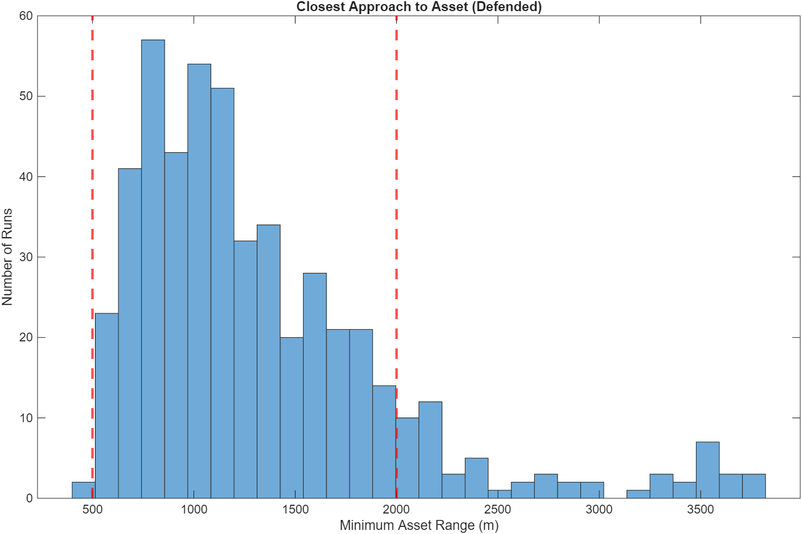

This project is a full 6-degree-of-freedom relative orbital proximity operations (RPO) and autonomous inspection simulation in MATLAB. It combines Clohessy-Wiltshire translational dynamics with quaternion-based attitude control using reaction wheels, LQR guidance for approach and fly-around, PD attitude pointing toward the chief satellite, and reaction wheel desaturation logic. The deputy performs a controlled approach from 180 m, enters a 25 m standoff inspection trajectory, and maintains line-of-sight pointing throughout.
What I Worked On
Implemented full 6DOF coupled translation + attitude dynamics with RK4 integration
Designed LQR-based translational guidance with feedforward CW terms and range band constraints
Developed quaternion PD attitude controller with reaction wheel torque allocation and unloading
Created smooth inspection reference trajectory
Modeled reaction wheel saturation, torque limits, and speed constraints
Implemented line-of-sight (LOS) checking and body-X pointing toward chief spacecraft
What I Learned
How to couple translational and attitude dynamics in a realistic 6DOF simulation
Practical challenges of reaction wheel momentum management and saturation
Designing smooth, feasible reference trajectories for inspection missions
Tuning LQR and PD gains for robust performance under actuator limits
Importance of proper quaternion normalization and shortest-path error logic
Real-world considerations in autonomous RPO: LOS constraints, hardware selection, and control blending
3D Inspection Trajectory with LOS Cone Visualization
Control acceleration commands (a_x, a_y, a_z)
Relative trajectory in x-z plane (Deputy path with inspection zone)
Reaction wheel torque profiles
Reaction wheel speeds (RPM) with saturation limits
AUTONOMOUS SATELLITE NO GO ZONE FOR TRUE ANOMALY SPACE
2D Trajectory - Blocking Maneuver

Closest Approaches while Defending
6DOF ROCKET SIMULATION - V-2 DYNAMIC MODEL (C++)
This project is a 6DOF unguided rocket simulation written in C++
using a modular, object-oriented structure. The model advances translational motion
through force integration with a time-varying mass and advances rotational motion using body-rate
equations with Euler angle kinematics. Aerodynamic drag, thrust modeling, gravity-turn behavior,
and a Monte-Carlo routine for launch angle and mass variations are all included
to evaluate sensitivity and dispersion.
What I Worked On
Implemented 6DOF rigid-body equations using Euler angle kinematics and p q r body-rate propagation.
Built reusable C++ math utilities for vectors, rotation conversions, and forces.
Modeled thrust with linear mass depletion and computed drag from dynamic pressure, Cd, and reference area.
Advanced all states using a forward Euler integrator.
Object-oriented C++ architecture (Vector3, Quaternion, RigidBody, Aerodynamics, Propulsion)
Created a Monte-Carlo system that perturbed launch angle and mass scale to study trajectory dispersion.
What I Learned
How to structure a multi-file C++ simulation with clear separation between math, dynamics, and integration logic.
How to debug coupled rotational and translational equations and ensure stable propagation with small time steps.
How aerodynamic forces and simple model assumptions influence sensitivity studies.
How to build flexible simulation code that can be extended, modified, or repurposed for more complex GNC work